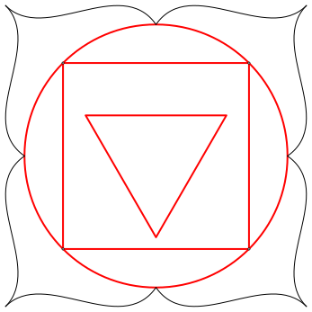
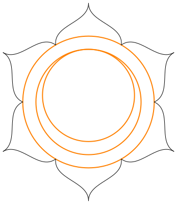
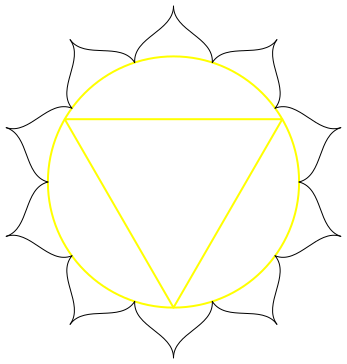
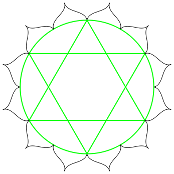
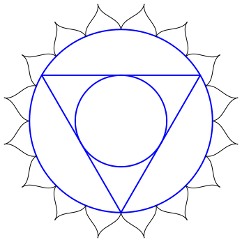
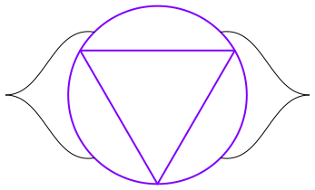
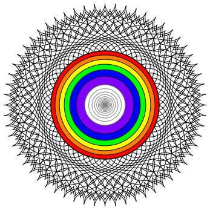

Sette chakra
2020-07-29 ( 2020-08-07)Yoga Shastra = ?
Trimurti è la trinità induista: Brahma il creatore [terra], Vishnu il conservatore [ acqua ], Shiva il distruttore [ fuoco ]. Tre aspetti della stessa divinità Ishvara.
ROOT CHAKRA [rosso; 4; terra (base)]
 Sotto il coccige, perineo, base della spina dorsale.Assorbe energia dalla terra. Istinti. Sopravvivenza. Paura ( fear ).
Ganesh (dio degli inizi, successo e saggezza). Elefante. Indra ( underworld, abissi dell’inconscio)
SACRAL CHAKRA [arancione; 6; acqua]
Gonadi sessuali. Luna e maree. Gioia di vivere, sensualità, piacere, emozioni. Risveglio. Creazione. ( feelings )
Brahma (dio creatore, progenitore, parola). Varuna (cavalca un coccodrillo): dio dell’acqua.
SOLAR PLEXUS CHAKRA [giallo; 10; fuoco]
Energia vitale. Volontà, desiderio, confidenza e assertività. Trasformazione. Ambizione, intenzione, motivazione. Pancreas. Digestione. ( proactivity )
Vishnu: Agni: dio del fuoco (con due teste: creazione e distruzione).
HEART CHAKRA [verde; 12; aria]
Cuore e polmoni. Femmina e maschio uniti.
Equilibrio, integrazione, amore e compassione, armonia, pace. ( harmony )
Rudra, dio della caccia e della tempesta; Shiva, distruttore del male e dio della trasformazione. Triangolo in su: Shiva (principio maschile). Triangolo in giù: Shakti (principio femminile).
THROAT CHAKRA [blu; 16; etere]
Purificazione. Espressione e comunicazione. Ascolto e parola. Trasformazione e guarigione, metabolismo. Creatività e idee. ( philosophy )
Jeeva (embodied soul); Sadashiva (dio/dea con cinque teste e dieci braccia, con pelle di tigre); Ambara.
THIRD EYE CHAKRA [indaco; 2; aura]
 Trasparente. Subconscio e intuizione. Percezione, visioni e coscienza. Domande, conoscere, ricevere messaggi. Dualità soggetto e oggetto (ghiandole pituitaria e pineale?). Energie e conversione. ( *wisdom* )Shiva, dio della distruzione; Hakini Shakti, dea della perfetta meditazione. (Mantra: OM)
CROWN CHAKRA [bianco-oro; 1000; divino]
Mille petali multicolori. Coscienza pura, divinità. Comprensione. Universalità e connessione. Collegamento con il divino. Destino. Bianco, oro, indaco. ( spirituality )
Formless-Almighty , Thousand Named Goddess.